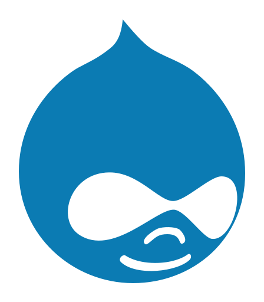

A PROPOS

Nom : Jean-Christophe Urbain
Age : 35 ans
Ville : Reims
Hobbies : Musique, Informatique, Cuisine, Bricolage
Après avoir travaillé une dizaine d’années dans le spectacle vivant et l’animation socioculturelle, j’ai remis en question ma vie professionnelle. En effet, à la suite d’une évolution de ma vie familiale, je me suis rendu compte que ces deux vies n’étaient pas en adéquation. Après un bilan de compétences, je me suis révélé une appétence pour l’informatique.
J’ai choisi d’intégrer la Remise à Niveau et la découverte des métiers de l’informatique du CESI pour essayer de répondre à mes premières questions. Ces quatre mois de formation m’ont permis de choisir entre le métier de technicien de maintenance informatique et de développeur web. L’aspect créatif et le fait de pouvoir travailler dans des petites structures ont fait pencher la balance du côté du développement même si l’univers du réseau m’a beaucoup intéressé. C’était une expérience riche et qui m’a conforté dans mes choix de reconversion. Pendant ces premiers mois de formation, j’ai effectué un stage afin de pouvoir mettre en situation les acquis en entreprise. Pendant mes années d’animateur socioculturel, j’ai tissé un fort réseau dans le milieu culturel et de la communication. J’ai pu travailler avec beaucoup de graphistes et d’entreprises spécialisées dans la communication digitale. J’ai eu une très bonne relation avec l’entreprise Retrokube, qui m'a ouvert ses portes pour mon stage d'un an en alternance et ainsi valider ma formation de développeur web.
COMPETENCES
Front-end
Création et intégration de sites web et applications mobiles responsive, accessibles et répondant aux normes W3C.
-
HTML5
-
CSS3
-
SASS
-
Javascript Vanilla
Back-end
Notions en PHP procédural, création et gestion de base de données et mise en ligne.
-
PHP7
-
MySQL / Merise
-
SSH / FTP
CMS
Création et édition de thèmes et plugins.
-

Drupal
-
Wordpress
-
Joomla
-
Prestashop
Web design
Création de maquettes XD et HTML, ainsi que de prototypes fonctionnels. Conception centrée utilisateur selon les règles d'UX lors de la création d'une interface utilisateur.
-
Adobe XD
-
Photoshop
-
Illustrator
-
Première
-
After Effects
Environnement
Système d'éxploitation : Windows 10, Linux Ubuntu 20.04
Work Flow : Git, WAMP, WinSCP, Chrome, Mozilla Firefox, Microsoft Edge
IDE : Visual Studio Code
Autres compéences : Rédacteur web, SEO, Community Management
Savoir-être : Capacité d'apprentissage, Collaboration, Prise de décision, Organisation, Sens du service, Esprit d'équipe.
PARCOURS
Juin 2021
Diplôme Développeur Web (niveau 5)
CESI, Reims (51)
- Créer et intégrer des médias pour le web.
- Optimiser sa communication numérique.
- Développer un site web.
- Communiquer et promouvoir une application ou un site web.
Juin 2020
à
Juin 2021
Intégrateur web
Agence Retrokube, Reims (51).
- Création de sites vitrine avec Drupal et WordPress, création et édition de widgets et de thèmes.
- Intégration de maquettes HTML / SASS.
- Veille à la compatibilité avec les différents navigateurs (Chrome, Safari, Explorer, Firefox...) ainsi qu’au responsive (tablette, mobile).
- Mise en production (client SSH, connexion FTP).
- Gestion du SEO.
Mars 2020
à
Juin 2020
Formation professionnelle
"Découverte des métiers de l'informatique Développement web / Gestion et maintenance des systèmes". CESI, Reims (51).
- Maîtriser les concepts liés aux bases de données et notamment les bases de données relationnelles.
- Comprendre une infrastructure réseaux.
- Gestion de projet informatique.
- Initiation à l'algorithmique.
- Initiation au développement (procédural et objet).
Décembre 2011
à
Décembre 2019
Animateur socioculturel
Pôle Sud Musique - Association des Maisons de Quartier de Reims (51).
- Coordination de studios de répétitions.
- Coordination du dispositif d'accompagnement de groupes amateurs "Looper Tour".
- Mise en place de résidences artistiques.
- Coréalisation de concerts avec des associations de production.
- Coréalisation de concerts avec des associations de production.
- Mise en place d'ateliers de sensibilisation et de médiation culturelle auprès du jeune public.
2009
Licence Professionnelle Management et Administration des Entreprises Culturelles
IUT d'Angers (49).
2008
DUT Gestion des Entreprises et des Administrations
IUT de Reims (51).

CONTACT
Actuellement à la recherche d'un nouvel emploi, je suis intéressé
par les postes de :
Développeur front-end • Intégrateur web
+33 6 78 34 58 69